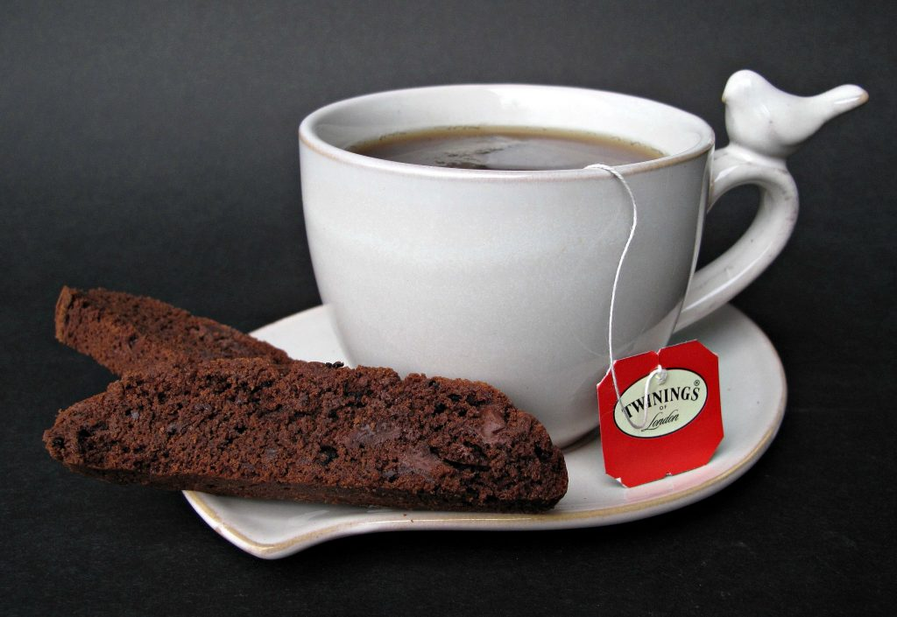

Dark Chocolate Espresso Biscotti

This recipe is for the biscotti and coffee lover. Combine decadent and rich dark chocolate flavor with the best coffee companion: traditional biscotti cookies. Dip it, or don't. No matter what, enjoy.
The coffee flavor comes from powdered espresso and coarsely ground espresso beans. The resulting biscotti are crunchy, sweet, and full of mocha flavor.
Ingredients
- 2 cups all-purpose flour
- ½ cup unsweetened Dutch-process cocoa powder Note: If you use natural cocoa powder instead of Dutch-process , use ½ teaspoon of baking soda instead of the baking powder.
- 2 teaspoons instant espresso powder
- ½ teaspoon salt
- 2 teaspoons baking powder
- 4 ounces semi-sweet chocolate chopped or broken into small pieces
- 8 tablespoons unsalted butter room temperature
- 1 cup granulated sugar
- 2 large eggs
- 2 teaspoons vanilla extract
- 1 cup semi-sweet chocolate chips
- 2 tablespoons espresso beans coarsely ground
Instructions
- Pre-heat oven to 300 degrees F. Line a baking sheet with parchment paper.
- In the bowl of a food processor, combine the flour, cocoa,espresso powder, salt, baking powder, and chopped chocolate. Pulse until the chocolate is ground into the flour mixture.
- In the bowl of a stand mixer, cream together the butter and sugar.
- Mix in the eggs and vanilla.
- Gradually add the flour mixture just until combined.
- Stir in the chocolate chips and ground espresso beans into the biscotti dough.
- Divide dough in half and form two logs about 14” x 2”. Place logs on prepared baking sheet at least 4” apart for the first bake.
- Bake for 30-35 minutes. Logs should be firm but not hard.
- Cool on a wire rack for at least 30 minutes. Leave the oven on.
- On a cutting board using a serrated knife, cut each loaf into ½ inch slices. (If the slices are crumbling, let the loaf cool a little longer.)
- Place slices, standing ½ inch apart, on a parchment lined cookie sheet for the second bake. Bake for 30 minutes until the surface of the cookies is dry ( though the chocolate chips will be gooey).
- Cool on a wire cooling rack. Store in an airtight container for up to 3 weeks.